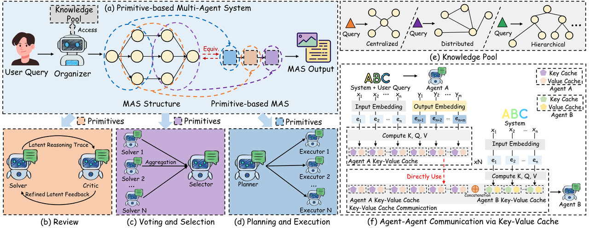

Abstract
While existing multi-agent systems (MAS) can handle complex problems by enabling collaboration among multiple agents, they are often highly task-specific, relying on manually crafted agent roles and interaction prompts. This increases architectural complexity and limits reusability across tasks.
We propose Agent Primitives, a set of reusable latent building blocks for LLM-based MAS. Inspired by neural network design, where complex models are built from reusable components, we observe that many existing MAS architectures can be decomposed into a small number of recurring internal computation patterns. We instantiate three primitives: Review, Voting and Selection, and Planning and Execution. Each primitive communicates via key-value (KV) cache to mitigate information degradation across multi-stage interactions.
Motivation
LLM-based multi-agent systems have emerged as a promising approach for tackling complex real-world problems. However, many systems are designed as task-specific architectures, with specialized roles and interaction prompts built from scratch. As the task becomes more complex, the system design also becomes more complex.
Agent Primitives aim to make multi-agent computation reusable. Rather than designing every agent system as a new workflow, we extract recurring computation patterns and use them as modular latent building blocks.
Primitive types
- Review Primitive — a Solver generates an initial answer, a Critic reviews it, and the Solver refines the answer.
- Voting and Selection Primitive — multiple candidate agents produce alternatives, and a selection stage chooses or synthesizes the final answer.
- Planning and Execution Primitive — a Planner decomposes a task, and an Executor carries out the planned steps.
Framework overview
The Organizer agent automatically selects and composes primitives for each query, guided by a lightweight knowledge pool of previously successful configurations. This forms a primitive-based MAS whose internal agents communicate through latent KV-cache states rather than only decoded text.

Overview of Agent Primitives and the Organizer-based composition process.
Results at a glance
Experiments evaluate math problem solving, code generation, and question answering across Qwen3-8B, DeepSeek-R1-Distill-Qwen-32B, and DeepSeek-R1-Distill-Llama-70B. Primitive-based MAS improve average accuracy while reducing the cost of multi-agent communication compared with text-based MAS.
| Models | Methods | AIME25 | AIME24 | MATH | GSM8K | HumanEval+ | MBPP+ | MedQA | GPQA | Avg. |
|---|---|---|---|---|---|---|---|---|---|---|
| Qwen3-8B | Single | 46.7% | 50.0% | 60.8% | 81.1% | 74.4% | 64.8% | 53.0% | 39.9% | 58.8% |
| TextMAS | 53.3% | 53.3% | 61.4% | 92.3% | 80.5% | 69.5% | 75.0% | 43.4% | 66.1% (+7.3 pp) | |
| LatentMAS | 53.3% | 56.7% | 62.6% | 93.8% | 80.5% | 74.6% | 75.3% | 45.5% | 67.8% (+8.9 pp) | |
| Review | 60.0% | 63.3% | 61.0% | 93.2% | 78.6% | 70.6% | 64.2% | 48.9% | 67.5% (+8.6 pp) | |
| Voting | 66.7% | 70.0% | 61.4% | 91.8% | 81.0% | 74.3% | 70.3% | 55.0% | 71.3% (+12.5 pp) | |
| Planning | 66.7% | 63.3% | 60.8% | 93.2% | 78.6% | 75.9% | 67.0% | 51.0% | 69.6% (+10.7 pp) | |
| Primitives-based MAS | 73.3% | 76.7% | 63.7% | 94.2% | 82.3% | 75.9% | 76.7% | 59.6% | 75.3% (+16.5 pp) | |
| DeepSeek-R1-Distill-Qwen-32B | Single | 53.3% | 73.3% | 63.4% | 93.8% | 80.5% | 73.8% | 68.0% | 62.1% | 71.0% |
| TextMAS | 53.3% | 73.3% | 68.0% | 93.8% | 82.3% | 74.6% | 79.6% | 62.6% | 73.4% (+2.4 pp) | |
| LatentMAS | 56.7% | 73.3% | 78.2% | 95.2% | 83.5% | 75.7% | 81.2% | 63.6% | 75.9% (+4.9 pp) | |
| Review | 53.3% | 70.0% | 71.3% | 94.6% | 81.1% | 73.8% | 73.0% | 62.1% | 72.4% (+1.4 pp) | |
| Voting | 56.7% | 70.0% | 74.7% | 95.0% | 86.6% | 74.6% | 79.3% | 63.1% | 75.0% (+4.0 pp) | |
| Planning | 53.3% | 66.7% | 74.6% | 93.8% | 85.3% | 74.3% | 75.0% | 62.6% | 73.2% (+2.2 pp) | |
| Primitives-based MAS | 63.3% | 73.3% | 79.8% | 95.0% | 86.6% | 75.7% | 82.7% | 64.6% | 77.6% (+6.6 pp) | |
| DeepSeek-R1-Distill-Llama-70B | Single | 50.0% | 70.0% | 69.6% | 92.4% | 82.3% | 66.4% | 64.5% | 65.2% | 70.1% |
| TextMAS | 53.3% | 70.0% | 72.8% | 93.2% | 82.3% | 68.8% | 77.8% | 65.7% | 73.0% (+2.9 pp) | |
| LatentMAS | 40.0% | 43.3% | 78.6% | 78.6% | 73.2% | 55.6% | 68.6% | 41.9% | 60.0% (-10.1 pp) | |
| Review | 50.0% | 70.0% | 75.9% | 91.8% | 82.3% | 67.2% | 72.9% | 65.2% | 71.9% (+1.9 pp) | |
| Voting | 56.7% | 73.3% | 77.2% | 93.8% | 82.9% | 68.8% | 77.8% | 65.7% | 74.5% (+4.5 pp) | |
| Planning | 50.0% | 63.3% | 75.6% | 92.4% | 82.3% | 66.7% | 74.0% | 65.2% | 71.2% (+1.1 pp) | |
| Primitives-based MAS | 56.7% | 76.7% | 79.3% | 93.8% | 85.3% | 70.6% | 81.9% | 66.7% | 76.4% (+6.3 pp) |
Accuracy (%) comparison on math problem solving, code generation, and Q&A tasks. Avg. reports average accuracy and improvement over the single-agent baseline in percentage points.
Paper
Agent Primitives: Reusable Latent Building Blocks for Multi-Agent Systems — PDF.
Get involved
BibTeX citation
@inproceedings{jin2026agentprimitives,
title={Agent Primitives: Reusable Latent Building Blocks for Multi-Agent Systems},
author={Jin, Haibo and Kuang, Peng and Yu, Ye and Yuan, Xiaopeng and Wang, Haohan},
booktitle={Proceedings of the 43rd International Conference on Machine Learning},
year={2026}
}